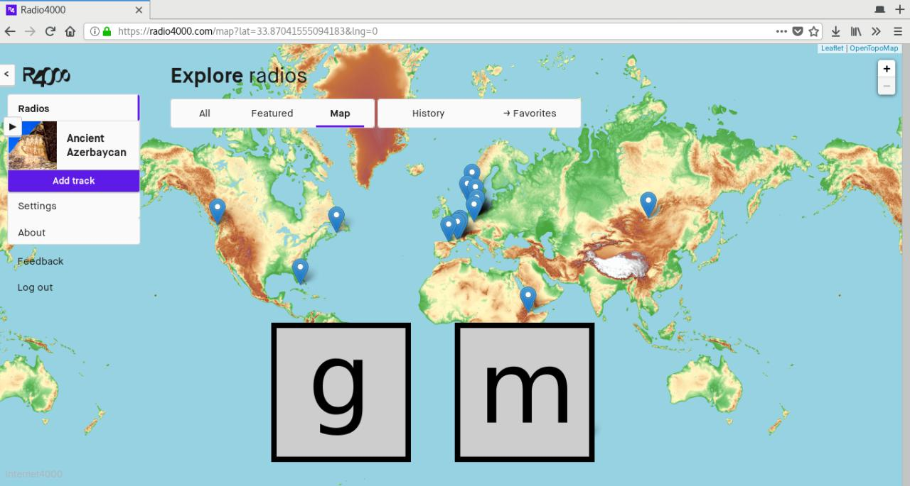

Keyboard shortcuts
You enjoy discovering and sharing music on Radio4000, but you would like the experience to be done without the mouse, keyboard only?
We just implemented new Keyboard shortcuts to improve your time on the site. find the full up-to-date list on in the support center.

Fig 1: keyboard shortcut `g m`, “go to map”